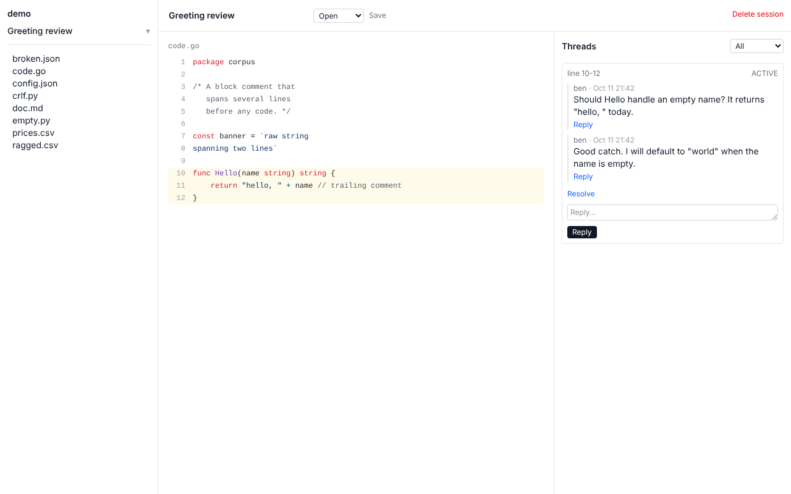
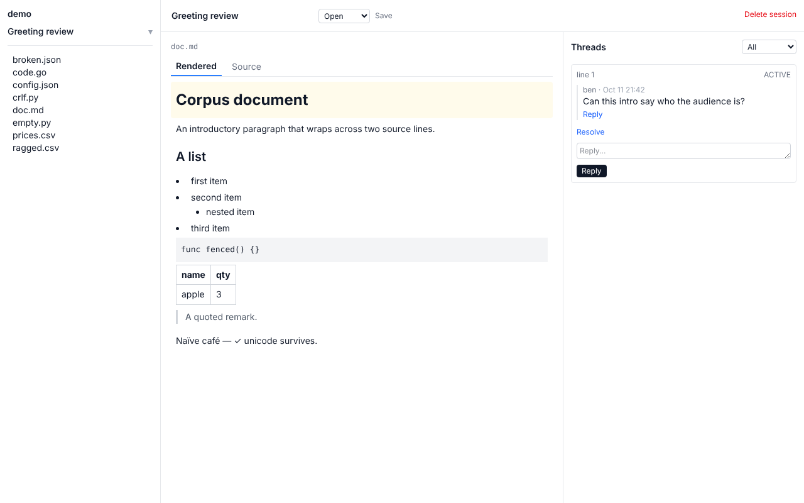

Review AI output on your own time.
AI writes documents, code and data that are easy to review live in a session and hard to review anywhere else. Gloss is the missing offline layer: read the files at your own pace, comment on specific lines, and hand those threads back to the AI over MCP.
$ gloss .
gloss: indexed 42 files (42 new, 0 reused, 0 skipped) in /home/you/project
# browser opens at http://localhost:4747

One binary
Run gloss . in any directory. A localhost web UI and MCP server, backed by SQLite. No account, no auth, no network.
Threads that follow edits
When the AI rewrites a file, threads re-anchor by fuzzy-matching context. If they can't, they orphan visibly. They never vanish.
Closes the loop
Claude Code reads your threads, replies in them, and can start threads of its own, all through the MCP endpoint on the same port.
The loop
- The AI generates files in your repo.
- You open Gloss later, read them, and comment on the lines that matter.
- The AI reads the open threads over MCP and responds in context.
- You continue the thread or resolve it. Resolved threads become context for the next pass.
Formats today: code, markdown, JSON, CSV and plain text. See the plugin reference.